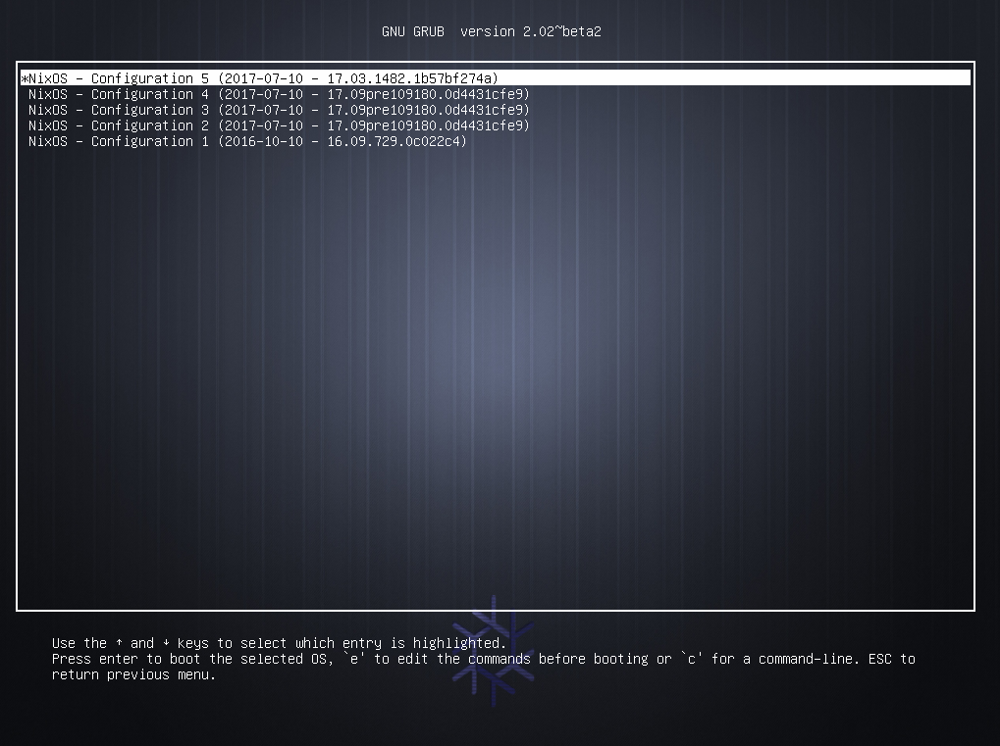

Adventures with the purely functional OS
NixOS Ecology
tersely
NixOS is a Linux distribution based on the Nix package manager
Nix supports Linux, OS X and FreeBSD
Nix uses the purely functional Nix Expression language to define packages
NixOps uses Nix to deploy NixOS based infrastructure to Amazon Web Services, Google Cloud Platform, VirtualBox, Hetzner and NixOS containers
DisNix uses Nix to deploy distributed services
Hydra is a continuous integration and build cache server for Nix
If I told you with NixOS
For those that come from Windows, there are no software installers
For those from OS X, there is no App Store
For those from Linux, it is not FHS compliant
no /sbin /lib /lib64 /usr/local /usr/lib …
/etc off limits
only /bin/sh and /usr/bin/env
In general you can’t install arbitrary applications or libraries from the internet
You have to learn the Nix Expression language
You may have to learn a little bit about purely functional programming
If you get stuck you can’t just get the answer on AskUbuntu
You may have to add packages to the package manager
You might ask
The answer is
We do these things not because they are easy, but because they are hard

and because it makes the impossibly difficult easily possible
The Nix Package Manager
There is an excellent explanation of what the Nix package manager is on Sander van der Burg’s blog http://sandervanderburg.blogspot.co.za/2012/11/an-alternative-explaination-of-nix.html
and what follows is directly based on that
Tools to automate installing, upgrading, configuring, and removing software packages
purely functional programming languages
to make deployment
reliable, reproducible and efficient
Was initiated by Eelco Dolstra as part of his PhD research
Purely functional programming languages
Functions are found in many programming languages
But they are usually not the same as functions in mathematics
ùë• Ôºù ùë¶ ‚áí ‚®ç‚üÆùë•‚üØ Ôºù ‚®ç‚üÆù붂üØif two function arguments are identical
then two function applications are too
Purely functional programming languages are not
This C code
does not obey the Leibnz’ principal
because it allows side-effects to be programmed
meaning it lacks referential transparency
so function application cannot be replaced by its result
Purely functional programming languages
depends only on its definition
and its arguments
Side-effects are not allowed to be programmed (they are pure)
No variables, only identifiers to immutable objects
This all means they are referential transparent
Purely functional programming languages
So expression only get evaluated when needed
Allows tying the knot, used for cyclic data structures while retaining purity
Purely functional programming languages which are lazy
Results of evaluation can be cached
Evaluation only happens when the result is required
Referential transparency gives determinism allowing parallel evaluation
Purely functional package management
Treat deployment of packages as a function in a programming language
Conventional package management
A “function” is representative of imperative languages like C
Execution can destructively modify other packages
/usr/lib),so dependencies could be found without being declared and
its difficult for multiple version of a package to co-exist
Purely functional package management
a function that describes how to build an artefact
being invoked with its required dependencies as arguments
(which is a lazy purely functional language)
Build recipes are run in isolated environments limiting chances of side effects
Purely functional package management
The result of each build is stored in a unique separate location
The storage locations are immutable
derived from all the inputs of the function
Unique locations give better guarantees against implicit dependencies sneaking through
Purely functional package management
You get determinism, the same package is the same where or when ever you install it
You can have multiple versions of packages co-existing
You can safely upgrade any package and always rollback an upgrade
You can in-place upgrade packages
NixOS
NixOS is a GNU/Linux distribution built around the Nix package manager
It builds on Nix using the Nix Expression DSL to declaratively define every component including the kernel and configuration files
It uses systemd for services which are declaratively defined using the Nix Expression DSL.
that is cached binaries are used instead of building from source when possible
the same configuration builds the same machine no matter when or where
NixOS is gives you relaible atomic upgrades
NixOS allows you to always rollback any changes
NixOS allows you to safely live upgrade your system
Nix Expression Language
It is a pure, lazy, functional language
Purity means no side-effects (e.g. no variable assignment)
Laziness means function arguments are only evaluated when needed
Functional means functions are first class and can be passed around and manipulated
The language is not full-featured and general purpose
Its aim is describing packages, compositions of packages and variability within packages
Comments
single-line, started with a
# character, orinline/multi-line, enclosed within
/* ... */Simple Values
- The null value
null - Integers
1234 - Booleans
trueandfalse - Strings
"single line string"
''
First line of a multiline string.
Second line
''
"this is an ${antiquote} in a string"- as a convenience URIs don’t need quotes
- Paths
/bin/shor./builder.sh
Lists
- heterogeneous list
- white space delimited list of values
- enclosed by square brackets
Sets
- heterogeneous dictionary
- list of name value pairs called attributes
- delimited by semicolon
- enclosed by curly brackets
- attributes selected using
.
- in recursive sets elements can refer to each other
Let-expressions
Allows you to introduce local variables for an expression
Inheriting attributes
When defining sets its often convenient to copy variable from the surrounding scope
or from another set
both evaluates to
With-expressions
introduces the set e1 into the lexical scope of expression e2
Functions
Functions take a single argument with multiple arguments supported through currying
pattern: bodyf xFunctions
set patterns are supported
including variable binding, default values for missing keys and partial matches
Conditionals
Doesn’t really need explaining
Operators
e.attrpath # select attribute
e1 e2 # call function
e ? attrpath # test attribute existance
e1 ++ e2 # list concatenation
e1 + e2 # list or path concatenation
!e1 # boolean negation
e1 // e2 # set union
e1 == e2 # equality
e1 != e2 # inequality
e1 && e2 # logical AND
e1 || e2 # logical OR
e1 -> e2 # logical implication (!e1 || e2)Default builtin functions
- There are some default builtin functions
- The most important being
import- which loads a Nix Expression from a file
- and if the expression is a function
- allows you to call it immediately
Nix Hello World
Nix expressions that actually get built are derivations
Here is the example derivation for building GNU Hello
- function taking a set with attributes
stdenvandfetchurl - returns a derivation
- specifying the package’s name, source and meta info
- not specifying build procedure so standard Autotools will be used
./configure; make; make install
to build hello we compose its function with its arguments
- The
helloattribute is bound to the function defined earlier and invoked with its arguments - The dependencies of the function are themselves defined in the set
- Essentially in Nix one recursive set defines all packages and dependencies in terms of each other
When you install hello the following paths will be added to the Nix store
- The derivation that describes how to build
/nix/store/vh0mxra4c7jrdg2fi5yn83k5kwdflsbx-hello-2.6.drv - The source code fetched that was fetched
/nix/store/agjbqxl2n6yhqwcarx9shdbsc13dgwk0-hello-2.6.tar.gz.drv - The actual final binary
/nix/store/1gqj6zr1x0n812qxijy066fzrypgh3im-hello-2.6
Everything is cached so they won’t be downloaded again or build again if something else requires it
Nix Profiles
The answer is Nix profiles and again a very good explanation can be found on Sander’s blog http://sandervanderburg.blogspot.co.za/2013/09/managing-user-environments-with-nix.html
Nix profiles are user environments exposing a generation of installed packages to a user
- Packages can be installed into profiles using
nix-envcommand line utility
$ nix-env -i zip unzip- Installed packages can be run as normal without specifying paths with hash codes
$ zip --version
Copyright (c) 1990-2008 Info-ZIP - Type 'zip "-L"' for software license.
This is Zip 3.0 (July 5th 2008), by Info-ZIP.
Currently maintained by E. Gordon. Please send bug reports to
the authors using the web page at www.info-zip.org; see README for details.When you install packages a new profile is created
A profile is a symlink tree synthesizing the contents of the currently installed packages
A user environment / profile is also a Nix package residing in the store

- A generation symlink is generated (profile-1)
- There is a default symlink (profile) pointing to the currently active generation
- The default symlink is also referenced from the user’s home directory through
~/.nix-profile - Paths are added to the user’s
PATHby e.g.export PATH=~/.nix-profile/bin:$PATH
Deployment actions are actually non destructive
- if you install or remove packages with
nix-envnew profiles are created - you can always revert to a previous profile using
nix-env --rollback - to actually remove old profiles
nix-env --delete-generations old - and to actually physically remove files from the store
nix-collect-garbage
A minimal NixOS machine
{ config, pkgs, ... }:
{
imports =
[ # Include the results of the hardware scan.
./hardware-configuration.nix
];
# Use the GRUB 2 boot loader.
boot.loader.grub.enable = true;
boot.loader.grub.version = 2;
boot.loader.grub.device = "/dev/sda";
networking.hostName = "example-machine";
# List packages installed in system profile
environment.systemPackages = with pkgs; [
wget
termite
nvim
];
# List services that you want to enable:
services.openssh.enable = true;
networking.firewall.enable = false;
# Enable the X11 windowing system.
services.xserver.enable = true;
services.xserver.layout = "us";
# Enable the KDE Desktop Environment.
services.xserver.displayManager.sddm.enable = true;
services.xserver.desktopManager.plasma5.enable = true;
# Define a user account. Don't forget to set a password with ‘passwd’.
users.extraUsers.a_user = {
isNormalUser = true;
uid = 1000;
home = "/home/a_user";
extraGroups = ["wheel" "audio" "video" "networkmanager" "postgres" "vboxusers"];
initialPassword = "a_user";
};
# The NixOS release to be compatible with for stateful data such as databases.
system.stateVersion = "17.09";
# virtual box related
boot.initrd.checkJournalingFS = false;
virtualisation.virtualbox.guest.enable = true;
}{ config, pkgs, ... }:
{
imports =
[ # Include the results of the hardware scan.
./hardware-configuration.nix
];- The configuration is a function that lives in
/etc/nixos/configuration.nix - It imports the auto generated
hardware-configuration.nix
# Use the GRUB 2 boot loader.
boot.loader.grub.enable = true;
boot.loader.grub.version = 2;
boot.loader.grub.device = "/dev/sda";
networking.hostName = "example-machine";
# List packages installed in system profile
environment.systemPackages = with pkgs; [
wget
termite
neovim
];- some boot options
- the machine name
- some packages to be installed in the root profile
# List services that you want to enable:
services.openssh.enable = true;
networking.firewall.enable = false;
# Enable the X11 windowing system.
services.xserver.enable = true;
services.xserver.layout = "us";
# Enable the KDE Desktop Environment.
services.xserver.displayManager.sddm.enable = true;
services.xserver.desktopManager.plasma5.enable = true;- list some services to have enabled
- specify the desktop environment
# Define a user account. Don't forget to set a password with ‘passwd’.
users.extraUsers.a_user = {
isNormalUser = true;
uid = 1000;
home = "/home/a_user";
extraGroups = ["wheel" "audio" "video" "networkmanager" "postgres" "vboxusers"];
initialPassword = "a_user";
};Define the users of the system

- If you want to try out changes without making it permenant
sudo nixos-rebuild test - If you are happy and want to switch to the new configuration
sudo nixos-rebuild switch - If you want to rollback changes
sudo nixos-rebuild rollback - If you accidentally make your system non-bootable you can still boot into any previous config from the grub menu.
Developing with Nix
If you work on different sets of software you don’t want the dependencies to interact
nix-shell command to enter a development environment with all your dependencies setup.
default.nix in a folder named after it
This file defines a function though that needs to be invoked with its environment
This is where the shell.nix file comes in which nix-shell uses by default
The shell.nix file sets up the environment and then calls the default.nix file
# default.nix
{stdenv, fetchurl}:
stdenv.mkDerivation {
name = "hello-2.6";
src = fetchurl {
url = ftp://ftp.gnu.org/gnu/hello/hello-2.6.tar.gz;
sha256 = "1h6fjkkwr7kxv0rl5l61ya0b49imzfaspy7jk9jas1fil31sjykl";
};
meta = {
homepage = http://www.gnu.org/software/hello/manual/;
license = "GPLv3+";
};
}- import the top level nix packages expression
- import
./default.nix - call the function passing in
stdenvandfetchurlfrom the top level nix expression
In the hello directory run nix-shell
- This drops you in a development shell
- All your build dependencies are present
- to unpack the fetched source run
unpackPhase - then cd into the source directory and run
./configureand./make
Adhoc Build Environments
nix-shell to setup your environments
Haskell Hakyl Environment
let
pkgs = import <nixpkgs> {};
haskellPackages = pkgs.haskellPackages.override {
overrides = self: super: with pkgs.haskell.lib;{
ghc-syb-utils = dontCheck super.ghc-syb-utils;
};};
ghcWithPackages =
haskellPackages.ghcWithHoogle (g: with g;
[classy-prelude hakyll hakyll-favicon hakyll-filestore
hakyll-ogmarkup hakyll-series base pandoc pandoc-types
]);
in with pkgs;
runCommand "hakyll-env"
(with ghcWithPackages.haskellPackages;
rec
{ ghc = ghcWithPackages;
shellHook = "eval $(egrep ^export ${ghc}/bin/ghc)";
buildInputs =
[ ghcWithPackages zsh ghc-mod hindent cabal-helper
cabal-install codex stylish-haskell hoogle hlint
align netcat-openbsd hdevtools];})
"echo success > $out"Haskell Hakyl Environment
let
pkgs = import <nixpkgs> {};
haskellPackages = pkgs.haskellPackages.override {
overrides = self: super: with pkgs.haskell.lib;{
ghc-syb-utils = dontCheck super.ghc-syb-utils;
};};
...- we import the top level nix expression
- we then override the
ghc-syb-utilspackage skipping its test suite
Haskell Hakyl Environment
ghcWithPackages =
haskellPackages.ghcWithHoogle (g: with g;
[classy-prelude hakyll hakyll-favicon hakyll-filestore
hakyll-ogmarkup hakyll-series base pandoc pandoc-types
]);Then we create a special GHC that has the specified libraries available along with a custom Hoogle and documentation
Haskell Hakyl Environment
in with pkgs;
runCommand "hakyll-env"
(with ghcWithPackages.haskellPackages;
rec
{ ghc = ghcWithPackages;
shellHook = "eval $(egrep ^export ${ghc}/bin/ghc)";
buildInputs =
[ ghcWithPackages zsh ghc-mod hindent cabal-helper
cabal-install codex stylish-haskell hoogle hlint
align netcat-openbsd hdevtools];})
"echo success > $out"- we specify our “fake” derivation
- we setup some environment variables for GHC on shell entry in
shellHook - we list all the tools we want in our
buildInputsattribute
Clang Environment
let
pkgs = import <nixpkgs> {};
in with pkgs;
clangStdenv.mkDerivation rec
{ name = "cpp-play-${version}";
version = "0.0.0";
buildInputs =
[clang clang-tools llvmPackages.libcxx llvmPackages.libcxxabi glibc gdb];
CPLUS_INCLUDE_PATH =
"${llvmPackages.libcxx}/include/c++/v1:${clangStdenv.cc.libc_dev}/include";
C_INCLUDE_PATH = "${clangStdenv.cc.libc_dev}/include";
LD_FLAGS =
"-L${llvmPackages.libcxx}/lib -L${llvmPackages.libcxxabi}/lib";
}all attributes are defined as environment variables in the shell
antiquoting a package results in its final stored location
Pegging Build Environment
Given file hello/pegged-nix.nix
# helper to fetch nix-expression
let fetchFromGitHub = (import <nixpkgs> {}).fetchFromGitHub;
# fetch the nix expression from github at the specified revision
in import
( fetchFromGitHub
{
owner = "NixOS";
repo = "nixpkgs";
rev = "2839b101f927be5daab7948421de00a6f6c084ae";
sha256 =
"0a863cc5462gn1vws87d4qn45zk22m64ri1ip67w0b1a9bmymqdh";
}
) {}Then hello can be called in hello/shell.nix using the pegged nix packages
Deploying with NixOps
NixOps is a cloud deployment tool extending NixOS’s declerative approach to networking and provisioning.
Simple Virtual Box Web Server
Create a new deployment, then deploy it to Virtual Box and then display info about the deployment.
nixops create ./valgrind-docs.nix ./single-vbox.nix -d single-vbox
nixops deploy -d single-vbox --force-reboot
nixops info -d single-vboxNetwork name: single-vbox
Network UUID: 650dbdee-752c-11e8-9eec-0242c2d31dbe
Network description: Single web server serving valgrind docs
Nix expressions: ./valgrind-docs.nix ./single-vbox.nix
+-----------+-----------------+------------+-------------+----------------+
| Name | Status | Type | Resource Id | IP address |
+-----------+-----------------+------------+-------------+----------------+
| webserver | Up / Up-to-date | virtualbox | ........... | 192.168.56.101 |
+-----------+-----------------+------------+-------------+----------------+Valgrind’s documentation is served up at http://192.168.56.101
Load Balanced LibVirt Web Server
let # load-balanced.nix
backend = (import ./valgrind-docs.nix).webserver;
in
{
network.description = "Load balancing network";
proxy =
{ config, pkgs, nodes, ... }:
{ services.httpd.enable = true;
services.httpd.adminAddr = "bob@example.org";
services.httpd.extraModules = ["proxy_balancer" "lbmethod_byrequests"];
services.httpd.extraConfig =
''
<Proxy balancer://cluster>
Allow from all
BalancerMember http://backend1 retry=0
BalancerMember http://backend2 retry=0
</Proxy>
ProxyPass / balancer://cluster/
ProxyPassReverse / balancer://cluster/
'';
networking.firewall.allowedTCPPorts = [ 80 ];
};
backend1 = backend;
backend2 = backend;
}Load Balanced LibVirt Web Server
Create a new deployment, then deploy it to libvirt and then display info about the deployment.
nixops create ./load-balanced.nix ./load-balanced-libvirt.nix -d load-balanced-libvirt
nixops deploy -d load-balanced-libvirt
nixops info -d load-balanced-libvirtNetwork name: load-balanced-libvirt
Network UUID: d4e37f45-7531-11e8-823f-0242c2d31dbe
Network description: Load balancing network
Nix expressions: /home/handre/dev/load-balanced.nix /home/handre/dev/load-balanced-libvirt.nix
+----------+-----------------+----------+-------------+-----------------+
| Name | Status | Type | Resource Id | IP address |
+----------+-----------------+----------+-------------+-----------------+
| backend1 | Up / Up-to-date | libvirtd | | 192.168.122.14 |
| backend2 | Up / Up-to-date | libvirtd | | 192.168.122.25 |
| proxy | Up / Up-to-date | libvirtd | | 192.168.122.227 |
+----------+-----------------+----------+-------------+-----------------+Valgrind’s documentation is served up at http://192.168.122.227
How We Use It at Work
- We all run NixOS either natively or in a VM
- We use Hydra as our CI server
- Using NixOps we
- deploy to AWS
- deploy to physical machines in the factory
- update our personnel’s VMs
Final thoughts
- There is much more, we have only scratched the surface
- The documentation is good and getting better https://nixos.org
- You can actually search configuration attributes
- You can search packages too
- Arch Linux’s Wiki is really helpful.
- Your are not limited to packages build from source, third party binaries are installable
- using
patchelfor - emulating
FHS
- using
- It is really nice if you want a slightly unconventional setup (XMonad)
- It makes it easier to experiment with new hardware like ill supported laptops.
- Easily iterate configurations untill something works without worrying about bricking it
- When your laptop gets stolen its really nice to get back up and running quickly